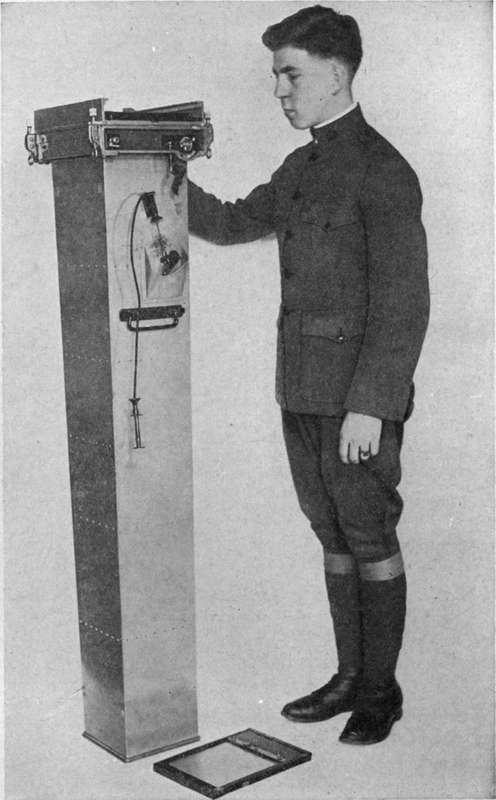

The Question Of Focal Length
Description
This section is from the book "Airplane Photography", by Herbert E. Ives. Also available from Amazon: Airplane photography.
The Question Of Focal Length
In aerial photography the lens is invariably used at fixed, infinity, focus. Under these conditions the simple relationship holds that the size of the image is directly proportional to the focal length and inversely proportional to the altitude. If any chosen scale is desired for the picture the choice of focal length is determined by the height at which it is necessary to fly. This at least would be the case were there no limitation to the practicable focal length—which means camera size—and were one limited to the original size of the picture as taken; that is, were the process of enlargement not available. But the possibility of using the enlarging process brings in other questions: Is the defining power of a short focus lens as good in proportion to its focal length as that of a long focus lens? If so a perfect enlargement from a negative made by a short focus lens would be identical with a contact print from a negative made with a lens of longer focus. Is defining power lost in the enlarging process with its necessary employment of a lens which has its own errors of definition and which must be accurately focussed?
Certain factors which enter into comparisons of this sort in other lines of work, such as astronomical photography, play little part here. These are, first, the optical resolving power of the lens, which is conditioned by the phenomena of diffraction, and is directly as the diameter; and, second, the size of the grain of the plate emulsion. The first of these does not enter directly, because the size of a point image on the axis of the lens, due merely to diffraction, is very much less than that given by any photographic lens which has been calculated to give definition over a large field, instead of the minute field of the telescope. Yet it may contribute toward somewhat better definition with a long focus lens because of the actually larger diameter of such lenses. The second factor is not important, because, as will be seen later, the resolving power of the plates suitable for aerial photography is considerably greater than that of the lens. The emulsion grain is in fact only a quarter or a fifth the size of the image as given by a 25 centimeter lens, and enlargements of more than two or three times are rarely wanted.
A series of experiments was made for the U. S. Air Service to test out these questions, using a number of representative lenses of all focal lengths, both at their working apertures and at identical apertures for all. With regard to lens defining power, as shown by the size of a point image, the answer has already been reported in a previous* section. Lenses of long focus give a relatively smaller image than lenses of the same design of short focus. In regard to the whole process of making a small negative and enlarging it, the loss of definition is quite marked, as compared to the pictures of the same scale made by contact printing from negatives taken with longer focus lenses.
This answer is clear-cut only for lenses calculated to give the same angular field. Thus a 10 inch lens covering a 4X5 inch plate has about the same angle as a 50 centimeter lens for an 18X24 centimeter plate. When, however, it comes to the longer foci, such as 120 centimeters, the practical limitation to plate size (18X24 cm.) has been passed, and the angular field is less than half that of the 50 centimeter lens. The 120 centimeter lens need only be designed for this small angle, with consequent greater opportunities for reduction of spherical aberration. It is therefore an open question whether a 50 centimeter lens designed to cover a plate of linear dimensions —: times that used with the regular 50 centimeter lens could not be produced of such quality that it would yield enlargements equal to contacts from a 120 centimeter lens. If so, lenses of larger aperture could be used, and a considerable saving in space requirements effected.
Focal lengths during the Great War were decided by the nature of the military detail which was to be revealed and by the altitudes to which flying was restricted in military operations. In the first three years of the war the development of defences against aircraft forced planes to mount steadily higher, so that the original three or four thousand feet were pushed, to 15,000,18,000, and even higher. Lenses of long focus were in demand, leading ultimately to the use of some of as much as 120 centimeters (Fig. 41). In the last months of the war the resumption of open fighting made minute recording of trench details of less weight, while the preponderance of allied air strength permitted lower flying. In consequence, lenses of shorter focus and wider angle came to the fore, suitable for quick reconnaissance of the main features of new country. At the close of the war the following focal lengths were standard in the U. S. Air Service, and may be considered as well-suited for military needs. Peace may develop quite different requirements.
Fig. 41. - 120 centimeter deMaria camera.
Focal length | Aperture | Plate size |
10 inch | F/4.5 | 4X5 inch |
26 cm. | F/6 | 13X18 cm. |
12 inch | F/5.6 | 18X24 cm. |
20 inch | F/6.3 to F/4.5 | 18X24 cm. |
48 inch | F/10 to F/8 | 18X24 cm, |
The question of the use of teleyhoto lenses in place cf lenses of long focus is frequently raised. Lenses of this type combine a diverging (concave) element with the normal converging system, whereby the effect of a long focus is secured without an equivalent lens-to-plate distance. This reduction in "back focus" may be from a quarter to a half. Were it possible to obtain the same definition with telephoto lenses as with lenses of the same equivalent focus, they would indeed be eminently suitable for aerial work because of their economy of length. But experience thus far has shown that the performance of telephoto lenses, as to definition and freedom from distortion, is distinctly inferior, so that it is best to hold to the long focus lens of the ordinary type.
Lenses Suitable For Aerial Photography
Among the very large number of modern anastigmat lenses many were found suitable for airplane cameras and were used extensively in the war. A partial list follows: The Cooke Aviar, The Carl Zeiss Tessar, the Goerz Dogmar, the Hawkeye Aerial, the Bausch and Lomb Series Ic and lib Tessars, the Aldis Triplet, the Berthiot Olor.
Continue to:
Tags
camera, lens, airplane, aerial, film, exposure, photography, maps, birdseye